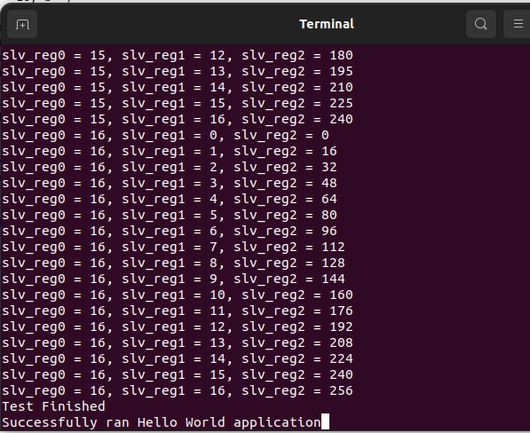
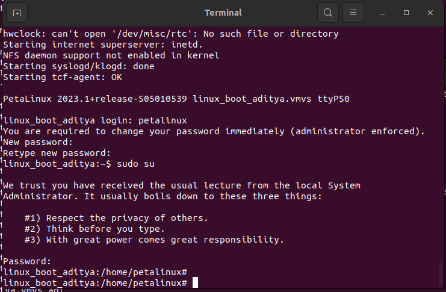
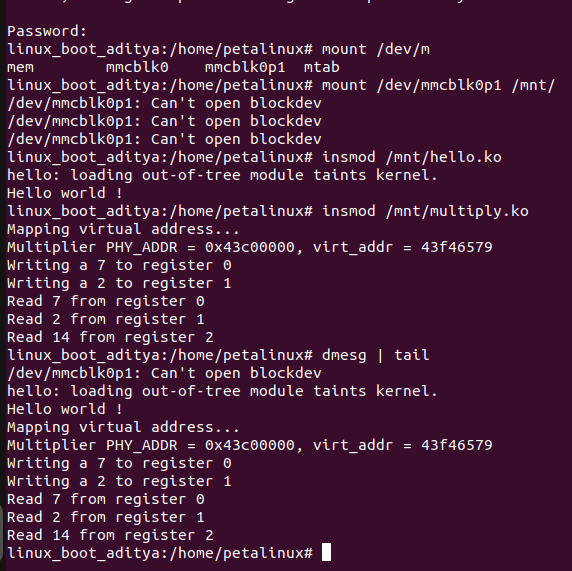
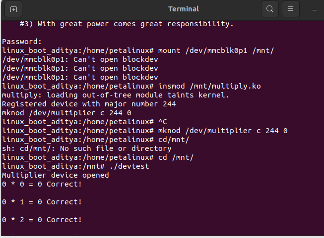
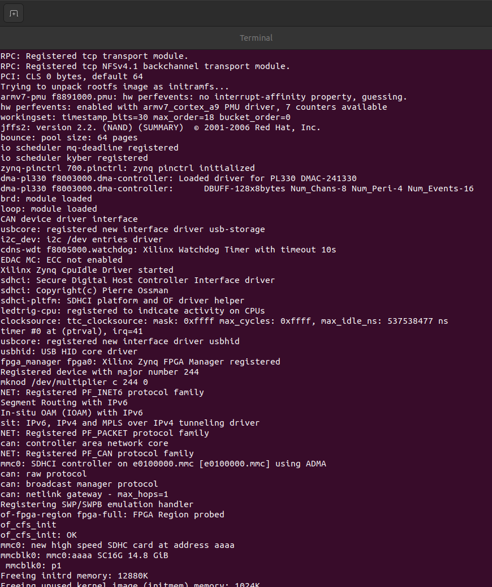

Introduction
This project walks a single piece of hardware, a custom AXI4-Lite multiplier, through every layer of a Zynq based embedded system. It starts in Vivado, where the peripheral is designed as three memory mapped 32-bit registers: two input operands and one product. The IP is validated first with bare-metal C on the ARM Cortex-A9 in Vitis, then carried into a booting Linux system built with PetaLinux, and finally wrapped in a proper Linux character driver so that ordinary userspace code can talk to it through /dev/multiplier instead of raw physical addresses.
The result is a working demonstration of hardware and software partitioning: RTL and register design in the FPGA fabric, bare-metal register access for first pass verification, and a kernel space driver plus userspace test application for the full embedded Linux flow.
Tools & setup
Software and physical setup used across the hardware design, bare-metal, and embedded Linux stages of the project.
Software used
AMD Vivado
IP Integrator block design, custom AXI4-Lite peripheral packaging (slv_reg0 to slv_reg2), address editor, synthesis, and bitstream generation.
AMD Vitis
Bare-metal application on the ARM Cortex-A9 to write operands to the peripheral and read back the multiplication result over UART.
PetaLinux
Linux project configuration from the exported XSA, kernel module and built-in driver integration, menuconfig and Kconfig, and boot image generation.
C and Linux tooling
Kernel character driver (multiplier.c), userspace test app (devtest.c), cross compilation, picocom serial console, insmod and dmesg debugging.
Hardware used
ZYBO Z7-10 board (Zynq-7000, xc7z010clg400-1) with ARM Cortex-A9 processing system and programmable logic.
JTAG / USB-JTAG connection for bitstream download and Vitis debug.
USB-to-UART connection, monitored with picocom at 115200 baud for boot logs and application output.
SD card for PetaLinux boot files (BOOT.BIN, image.ub, boot.scr) and deployed kernel module files.
Project details
The project followed one signal path from the FPGA fabric to a Linux application. I first needed a small and predictable hardware interface. Once that interface existed, I tested it without an operating system so hardware problems would be easy to isolate. Only after the peripheral worked on its own did I bring up Linux, prove that kernel code could reach the same registers, expose them through a character device, and finally integrate the driver into the kernel. Each step answered one question and created the reason for the next step.
3.1 Start with a clear hardware interface
The ARM processor and FPGA fabric needed a simple contract before any software could be written. I defined that contract as three memory mapped 32-bit registers over AXI4-Lite. Software writes two operands into slv_reg0 and slv_reg1, while the hardware places their product in the read-only slv_reg2. Keeping the interface this small made every later layer easier to understand and test.
- Create the project and add the PS
Started a new Vivado RTL project targeting the ZYBO Z7-10 device (xc7z010clg400-1), opened IP Integrator, created a Block Design, and added the ZYNQ7 Processing System block.
- Apply the board preset
Applied the ZYBO Z7 B2.tcl configuration preset, then in the Peripheral I/O Pins tab enabled UART 1 for serial communication and unchecked all other unused peripheral I/O pins, keeping the PS configuration minimal.
- Package the custom multiply IP
Created the
multiplyAXI4-Lite peripheral with three 32-bit AXI slave registers:slv_reg0andslv_reg1as write targets for the two operands, andslv_reg2as a read-only register holding the product. - Wire it into the system
Connected the multiply IP AXI slave interface to the AXI Interconnect, ran Connection Automation so the ARM Cortex-A9 (as AXI Master) could reach the peripheral, and checked clock and reset connections.
- Verify the address map
Opened the Address Editor and confirmed the multiply IP received a unique, non-overlapping memory-mapped address range, since this address is what both Vitis and the Linux driver later use to reach the registers.
- Validate, generate, and export
Ran Validate Design to catch any connection or addressing errors, generated the HDL wrapper, generated the bitstream, and exported the hardware platform as an XSA file with the bitstream included, so it could be consumed by both Vitis and PetaLinux.
How this was verified: Vivado's design validation and implementation reports confirmed that the connections were complete, the address range did not overlap another device, and timing passed. The resulting XSA described both the processing system and the new peripheral.
This proved that the design could be built, but it did not prove that the processor could write the registers or receive the correct result. The next step was therefore a direct bare-metal test with as little software between the ARM core and the peripheral as possible.
3.2 Prove the data path without Linux
I used Vitis to exercise the exported hardware directly from bare-metal C. This kept page tables, drivers, system calls, and userspace out of the test. If a value was wrong, the problem had to be in the register offsets, AXI connection, or multiplier logic rather than somewhere inside a Linux software stack.
- Create the application project
In Vitis, created a new application project from the XSA exported by Vivado, chose the standalone application flow, and confirmed UART output was routed to the console.
- Read the base address
Located the base address of the multiply IP in the generated
xparameters.hasXPAR_MULTIPLY_0_S00_AXI_BASEADDR. - Write the test routine
Implemented nested loops for operands
aandb, each running from 0 to 16, writingatoslv_reg0(offset 0) andbtoslv_reg1(offset 4) usingMULTIPLY_mWriteReg, then reading the product back fromslv_reg2(offset 8) usingMULTIPLY_mReadReg. - Print and program
Printed
slv_reg0,slv_reg1, andslv_reg2for every pair over UART withprintf, then programmed the FPGA and ran the application while watching the console.
Cu32 base_addr = XPAR_MULTIPLY_0_S00_AXI_BASEADDR;
for (a = 0; a <= 16; a++) {
for (b = 0; b <= 16; b++) {
MULTIPLY_mWriteReg(base_addr, 0, a); // slv_reg0
MULTIPLY_mWriteReg(base_addr, 4, b); // slv_reg1
result = MULTIPLY_mReadReg(base_addr, 8); // slv_reg2
printf("slv_reg0 = %d, slv_reg1 = %d, slv_reg2 = %d\n", a, b, result);
}
}How this was verified: A terminal window running picocom was attached to the board's UART. Every printed line showed the two operand values and the register-read product side by side, so a mismatch would have been immediately visible.
What was observed: The value read back from slv_reg2 matched the expected product for every tested pair. For example, operands 16 and 16 produced 256. The test confirmed that the ARM core could reach the assigned AXI address, that all three offsets were correct, and that the RTL produced the expected result.

The hardware path was now known to work. Bare-metal code was useful for proof, but the final goal was to make the accelerator available to a normal Linux application. That required a Linux image built from the same hardware description.
3.3 Bring up Linux on the proven hardware
I used the same XSA to create a PetaLinux system for the ZYBO board. Reusing the exported platform kept the Linux build tied to the exact processor configuration, address map, and bitstream already verified in Vitis. The immediate goal was not yet to access the multiplier. It was to establish a stable bootloader, kernel, root file system, and serial console on which a driver could run.
- Install and source PetaLinux
Installed PetaLinux into a working directory and sourced the PetaLinux environment before creating a project.
- Create and configure the project
Created a new PetaLinux project from the Zynq template, then ran
petalinux-configwith the exported XSA to pull in the hardware description from Vivado. - Fix build dependencies
Modified the cracklib recipe to point its branch reference from
mastertomainso the build would not fail on a missing branch. - Build and collect boot files
Ran
petalinux-build, then verified thatboot.scrandimage.ubwere produced, and generated the boot imageBOOT.BIN. - Deploy to SD card
Copied
BOOT.BIN,image.ub, andboot.scronto a FAT32-formatted SD card. - Boot the board
Set the ZYBO Z7-10 boot mode jumper (JP5) to SD, connected over USB, opened
picocomat 115200 baud, inserted the SD card, and reset the board to observe the boot sequence.
How this was verified: The full Linux boot log was watched live in picocom, followed by an interactive login as user petalinux and an elevation to root with sudo su.
What was observed: Linux booted cleanly to a login prompt. Login as petalinux succeeded, including the required password change, and sudo su provided root access. This confirmed that the hardware platform, bootloader, kernel, root file system, SD card, and UART console were working together.

A successful boot established the software platform, but Linux still had no interface to the custom registers. Before designing a userspace API, I needed to answer a smaller question: could kernel code map the peripheral's physical address and perform the same transaction that worked in bare-metal C?
3.4 Reach the peripheral from kernel space
Linux kernel code cannot safely use the peripheral's physical address as a normal pointer. I created a small loadable module to map that address with ioremap(), perform controlled register reads and writes, and release the mapping during cleanup. A separate hello module first checked the basic build, load, and unload workflow so deployment issues would not be confused with hardware-access issues.
- Create the modules
Used
petalinux-create -t modules --name hello --enablefor a simple lifecycle test module, and a second module namedmultiplyfor the actual hardware access. - Add hardware headers
Added
xparameters.handxparameters_ps.has dependencies in themultiply.bbrecipe so the module could reference the peripheral's physical base address. - Map and access the peripheral
Used
ioremap()to map the peripheral's physical address into a kernel virtual address,iowrite32()to write the two operands into the input registers,ioread32()to read the result register, andiounmap()during cleanup, withprintkstatements logging every step. - Build and load
Built both modules with
petalinux-build, copied the resulting.kofiles to the SD card, mounted the SD card on the running board, and loaded the modules withinsmod hello.kofollowed byinsmod multiply.ko.
How this was verified: Kernel log output was checked with dmesg | tail, and loaded modules were confirmed with lsmod.
What was observed: The hello module printed its initialization message, which confirmed the module workflow. The multiply module then logged the physical and mapped virtual addresses, wrote 7 and 2 to the input registers, and read 14 from the result register. The same peripheral that worked in bare-metal code was now accessible through Linux memory mapped I/O.

This prototype proved kernel access, but it performed one fixed calculation during module initialization. A real application needs to choose operands at runtime without loading a new module or calling kernel functions directly. The next step was to turn the prototype into a character device with a stable file interface.
3.5 Give userspace a standard device interface
I kept the working register mapping and added a character driver around it. The driver presents the accelerator as /dev/multiplier, so a normal program can use open(), write(), read(), and close(). Userspace no longer needs to know the AXI base address or access physical memory. It only needs to follow the byte layout defined by the device interface.
- Map memory and register the device
In the module's
initfunction, mapped the physical register range withioremap(), then registered a character device namedmultiplierwithregister_chrdev(0, "multiplier", &fops), letting the kernel assign a dynamic major number, and registered the device only after the mapping succeeded so no partially initialized state could be exposed to userspace. - Implement file operations
Implemented
device_openanddevice_releasefor lifecycle logging,device_writeto accept up to 8 bytes from userspace (operand A in bytes 0 to 3, operand B in bytes 4 to 7) and write them into the peripheral withiowrite8, anddevice_readto return up to 12 bytes (operand A, operand B, and the product in bytes 8 to 11) usingioread8, moving data safely across the user and kernel boundary withget_userandput_user. - Build and deploy
Compiled the module to produce
multiply.ko, copied it and the other boot files to the SD card, booted the board, mounted the SD card, loaded the module withinsmod, and created the device node withmknod /dev/multiplier c <major> 0. - Write the userspace test app
Wrote
devtest.cto open/dev/multiplierwithO_RDWR, loop operand pairsiandjfrom 0 to 16, pack each into a 4-byte little-endian field inside an 8-byte write buffer, callwrite()to send both operands, callread()to pull back a 12-byte buffer, reconstruct the operands and the result, and compare the result against the software computed producti * j.
Cint fd = open("/dev/multiplier", O_RDWR);
unsigned char write_buf[8]; // operand A (bytes 0-3), operand B (bytes 4-7)
unsigned char read_buf[12]; // operand A, operand B, result (bytes 8-11)
write(fd, write_buf, 8);
read(fd, read_buf, 12);
unsigned int result = read_buf[8] | (read_buf[9] << 8) |
(read_buf[10] << 16) | (read_buf[11] << 24);
printf(result == (i * j) ? "Correct!\n" : "Incorrect!\n");
close(fd);How this was verified: Ran ./devtest on the board after mounting the SD card and inserting the module, and watched the printed line for each operand pair, each ending in either "Correct!" or "Incorrect!".
What was observed: Every combination from 0 times 0 through 16 times 16 printed "Correct!". This exercised the complete path for each calculation: userspace buffer, write system call, driver, AXI input registers, multiplier logic, result register, read system call, and userspace comparison.

/dev/multiplier and validates results returned through the character-driver interface.The accelerator was now usable from an application, but deployment still required copying a module, running insmod, reading the assigned major number, and creating the device node after every boot. The final step was to make the driver part of the kernel build so the platform could initialize it automatically.
3.6 Integrate the driver into the kernel
I moved the validated driver from the loadable-module workflow into the Linux source tree. Kconfig and Makefile entries made it a normal kernel option, and selecting it as built-in caused initialization to happen during boot. This removed the manual module-loading step and made the hardware support part of the platform rather than an add-on copied to the SD card.
- Explore kernel configuration
Ran
petalinux-config -c kernelto openmenuconfigand get familiar with how kernel features are controlled through Kconfig dependencies. - Add the driver into the kernel source tree
Extracted the Linux source into the PetaLinux project under
components/ext_sources, created a newmultiplier_driverdirectory inside the kernel'sdriversfolder, and copied the driver source files there. - Wire up Kconfig and the Makefile
Added a Makefile rule (
obj-$(CONFIG_MULTIPLIER_DRIVER) += multiplier.o), created a Kconfig entry defining the driver as a tristate option with an ARM dependency, and modified the top leveldrivers/Makefileanddrivers/Kconfigto include the new entry. - Enable it as built-in
Linked the external Linux source into the PetaLinux project, disabled the kernel version sanity check, and used
menuconfigto set the multiplier driver to built-in (Y) rather than a loadable module (M). - Build and boot
Ran
petalinux-build, copied the resultingimage.ubto the SD card, and booted the ZYBO Z7-10 using the existingBOOT.BINandboot.scr. - Trim the kernel
Disabled unrelated kernel features not needed by this system, network device support, multimedia support, and sound card support, then rebuilt and compared the resulting
image.ubsize against the untrimmed build.
How this was verified: Watched the full boot log for the driver's own printk messages appearing automatically, without any manual insmod, then re-ran ./devtest against /dev/multiplier exactly as in the loadable module stage.
What was observed: During boot, the log showed Registered device with major number 244 followed by the command needed to create /dev/multiplier. No manual insmod was required. Running devtest again produced correct results for every operand pair, which showed that kernel integration had not changed the device behavior. Disabling unused networking, multimedia, and sound features also produced a small reduction of about 1 KB in image.ub.

insmod step.The finished system now follows one clean path. Vivado defines the registers and multiplication logic. The Zynq processing system reaches them through AXI4-Lite. Linux maps the registers inside a built-in driver. The character device translates file operations into hardware transactions. Finally, devtest verifies the returned result from userspace. Each layer hides the details below it while preserving the same two operands and one product from start to finish.
Validation checklist
- Confirm register values in Vitis bare-metal code before involving Linux at all.
- Verify the loadable kernel module with
insmodanddmesgbefore converting it to a built-in driver. - Test the full operand sweep, 0 through 16, through
devtestagainst/dev/multiplier. - Check boot logs for the driver's own
printkmessages once the driver is built-in. - Compare
image.ubsize before and after trimming unrelated kernel features.
Useful links
Explore the implementation
Browse the complete project repository for the Vivado IP source, Vitis test application, kernel driver, and devtest userspace code.
View project on GitHub ↗